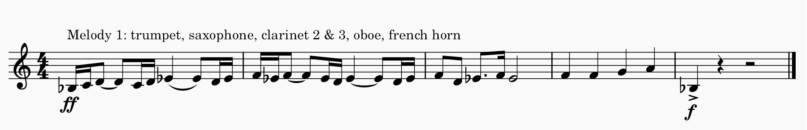
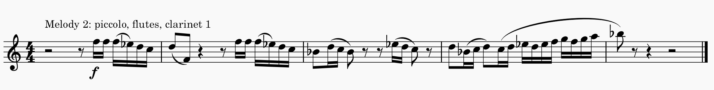
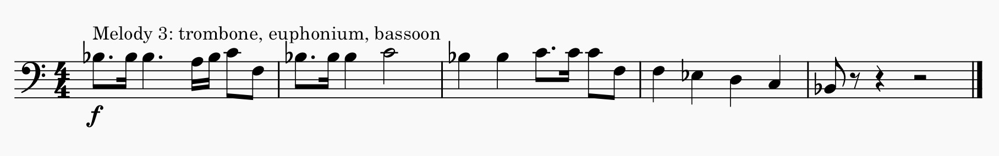

Attention is critical in learning because it allows us to focus on a specific stimuli. Composers exploit features of our attention to create interesting music. Some things that naturally capture attention and how they relate to composition:
Also, some instruments are naturally louder than others. Composers will play around with dynamics and with which instruments play with which and how many instruments will play at the same time to direct a listener's attention. Another fun example of how composers easily use loudness to capture attention is in Hayden's "Surprise Symphony".
Taken from: https://www.youtube.com/watch?v=lLjwkamp3lIOne thing that is really cool about music is that we can also choose to direct our attention to specific components of a piece. Classical composers might write several melodies at once and you can discover them by directing your attention to a specific instrument for example. When writing music, there is often a melody and an accompaniment. The melody is what we usually pay attention to and the accompaniment is what supports and embellishes the melody. However, one can choose to pay attention to the acccompaniment as well. Music is like a "melodic cocktail party" because there are often many melodies happening at the same time, and we can choose what we listen to (McAdams, 2022).
A piece I recently composed for band exploits the fact that there are different melodies one can listen to and I humbly think that this excerpt is a really cool example of the fact that you can choose which melody you want to hear. I combine four different melodies which all work together. Try to direct your attention to each of these melodies to discover them! If you can read music notation, you can follow the score to make it easier (though melody 4 is a bit harder to hear).
  